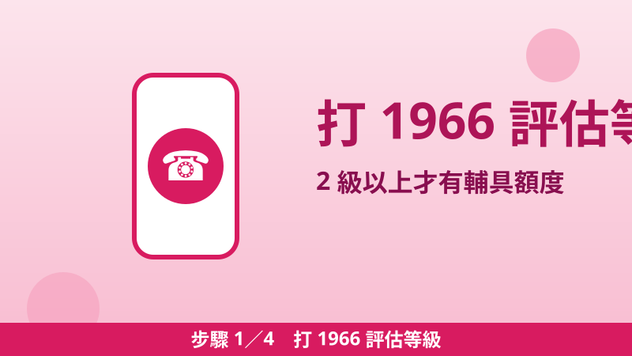
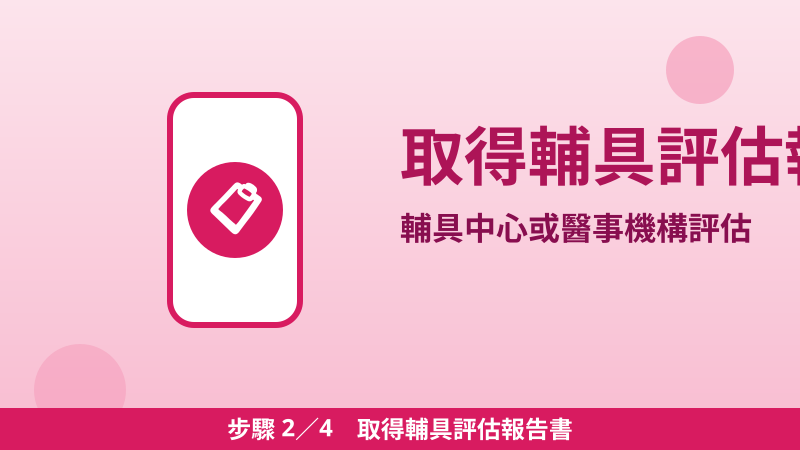
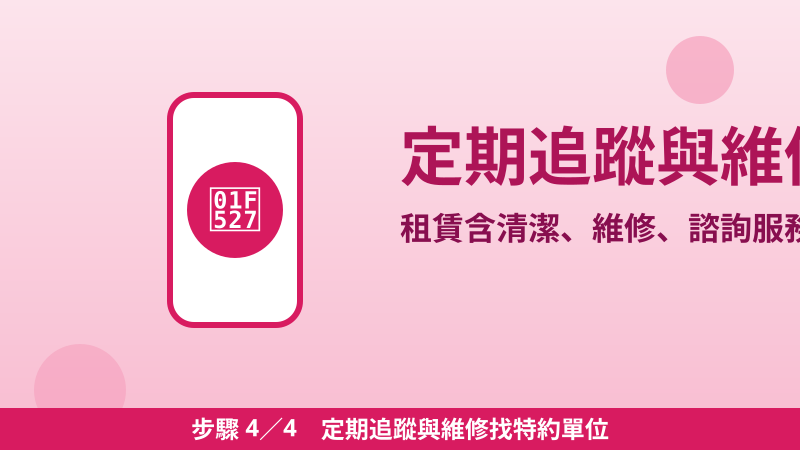

長照輔具補助申請教學：3 年 4 萬起、第二組 6 萬怎麼選，租比買划算的 5 種情況
長輩行動不便，家裡最先要添購的往往不是看護，而是輔具：一張合適的輪椅、一張可以升降的照顧床、浴室的扶手和防滑。這些東西單價不低，但通過長照評估後，就有一筆獨立的錢可以用——「輔具及居家無障礙環境改善」給付，每 3 年一組額度，不跟照顧服務、交通接送、喘息服務的額度混用。重點是：這筆錢要先評估、再拿報告書去特約單位買或租，順序錯了，補助就領不到。
第一組每 3 年 40,000 元／第二組每 3 年 60,000 元
先搞懂：兩組額度差在哪
| 項目 | 第一組（既有） | 第二組（115/7/1 起） |
|---|---|---|
| 3 年額度 | 40,000 元 | 60,000 元 |
| 輔具內容 | 傳統輔具購置與租賃（輪椅、助行器、氣墊床、居家用照顧床等） | 智慧科技輔具租賃（EI01–EI05：移位、移動、沐浴排泄、居家照顧床、安全看視 5 大類） |
| 可順便買的小東西 | — | 馬桶增高器、便盆椅、沐浴椅、單支拐杖、助行器（4 項傳統輔具可購置） |
| 居家無障礙改善 | 含在 40,000 元額度內（扶手、門檻移除等） | 至多 20,000 元，含在 60,000 元額度內 |
第二組不是「第一組再加 2 萬」，而是換一組算法：額度較高，但主力是智慧科技輔具的租賃，不是買斷。智慧科技輔具必須具備感測、數據紀錄、傳輸、分析與回饋機制，例如會偵測離床、跌倒或異常活動並通知照顧者的裝置；這類產品通常要透過網路傳到手機或系統，家裡要有穩定網路、照顧者要會操作，才適合選第二組。
自付多少：看長照身分別，不看失能等級
輔具額度不因家庭經濟狀況打折，差別只在自付比率。依衛福部長照專區給付額度表註記：第一類政府全額補助，第二類自付 5%–10%，第三類自付 16%–30%，實際比率以照管中心核定的長照身分別為準。舉例：一般戶（第三類）買一組核定價 30,000 元的輔具組合，若該項目自付比率為 30%，自付約 9,000 元；低收入戶、中低收入戶列冊者屬第一類，由政府全額補助。
另外一個省錢關鍵是代償墊付：自 113 年 1 月 1 日起全面實施，民眾到地方政府特約單位購置或租賃輔具、辦理居家無障礙改善時，原則上只需支付部分負擔，補助費用由特約單位向地方政府請款。前提是：一定要到「特約單位」，不是隨便一家醫療器材行買了就能報。
租比買划算的 5 種情況
- 病情變化快、需求可能改變：復健後功能進步或退步，輔具規格就要換，租賃可依需求彈性更換，不用把買斷的設備閒置在家。
- 只需要用一段時間：術後復原、短期臥床，租幾個月比買斷划算，期滿由特約單位回收整備。
- 單價太高、買斷負擔大：電動輪椅、電動代步車、爬梯機本來就「限租賃」，智慧科技輔具也以租賃為主，政策設計就是要你用租的。
- 怕買錯規格：輪椅座寬、照顧床升降功能、移位機承重，買錯很難退換；先租用再決定長期方案。
- 需要後續服務：租賃服務內容包含清潔、維修、諮詢、定期追蹤使用狀況與回收整備，維修義務由特約單位負擔，買斷則要自己找維修。
反過來說，長期穩定使用的小型輔具（例如拐杖、助行器、馬桶增高器）買斷通常更划算。衛福部問答集還有一條細節：涉及個人清潔衛生、無法清潔消毒使用的智慧科技輔具品項，5,000 元以下得以購置，每人每 3 年購置額度上限為 5,000 元。
四步驟：從打電話到拿到輔具

步驟 1打 1966 評估等級
撥打 1966 長照專線或洽各縣市長期照顧管理中心，由照管專員到府評估。符合長照需要等級 2 級以上（65 歲以上老人、55 歲以上原住民、50 歲以上失智症者、失能身心障礙者等），才有後續給付額度。

步驟 2取得輔具評估報告書
照管專員評估有輔具需求後，轉介至縣市輔具資源中心或復健相關醫事機構，由其整合整體需求並完成輔具評估報告書。智慧科技輔具須由甲類輔具評估人員確認適用且符合資格，才出具報告。
步驟 3到特約單位選購或租賃
拿著報告書到地方政府特約單位（特約社區藥局、醫療器材行）購置或租賃。選購前可先上衛福部輔具產品資料庫查詢平臺查規格，避免買到不在給付項目內的型號。

步驟 4定期追蹤與維修找特約單位
租賃期間的清潔消毒、維修、尺寸調整、定期追蹤都由特約單位負責，操作或故障問題直接找提供服務的特約單位。租賃紀錄表請簽章確認實際服務時間。
選組前必看的 3 個地雷
- 選了不能換：選定組別後 3 年內不得更換；115 年 6 月 30 日前已獲得第一組給付者，要自該給付的照顧計畫核定日起滿 3 年，才能改選第二組；額度用罄也不能提前換組加額度。
- 有外籍看護的家庭也能申請輔具：聘有外籍家庭看護工的家庭，照顧及專業服務額度只給 30% 且不能用於居家服務，但交通接送、輔具與無障礙環境評估、喘息服務仍可依各自額度申請——輔具這包不受外看 30% 限制影響。
- 額度不能流用：照顧、交通、輔具、喘息四包錢各有各的上限，不能把沒用完的照顧額度挪來買輔具，也不能把輔具額度挪去付交通費。
📎 資料來源
- 衛福部長照專區「申請長照服務」（長照需要等級 2 級以上、對象、四步驟流程、給付額度表：輔具服務與居家無障礙改善第一組 40,000 元、第二組 60,000 元自 115 年 7 月 1 日起實施；自付註記：第一類全額補助、第二類 5–10%、第三類 16–30%；外籍看護家庭仍可申請輔具與無障礙環境評估）：1966.gov.tw
- 衛福部長照專區「輔具及居家無障礙環境改善」（服務流程：照管專員評估→輔具資源中心或醫事機構完成評估報告書→特約單位購置或租賃；113 年 1 月 1 日起全面實施代償墊付，僅付部分負擔；租賃服務 20 項，電動輪椅、電動代步車、爬梯機限租賃，智慧科技輔具 EI01–EI05 限租賃）：1966.gov.tw
- 衛福部《長期照顧服務申請及給付辦法 115 年 7 月 1 日起實施輔具及居家無障礙環境改善服務規定問答集》（115.7.22 版：第二組 3 年 6 萬元含居家無障礙改善最高 2 萬元、兩組擇一、115/6/30 前已獲第一組者滿 3 年後始得選第二組、選定後不得更換、第二組可購置 4 項傳統小輔具、智慧科技輔具 5 大類與網路操作提醒、個人清潔衛生品項 5,000 元以下購置上限）：mohw.gov.tw
最後查證日期：2026-11-04
免責聲明：本文僅供參考，資格、金額、自付比率與給付項目以衛福部、各縣市長期照顧管理中心最新公告及核定的照顧計畫為準。